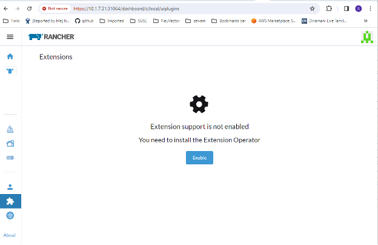
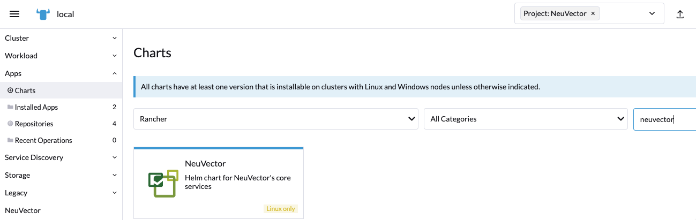
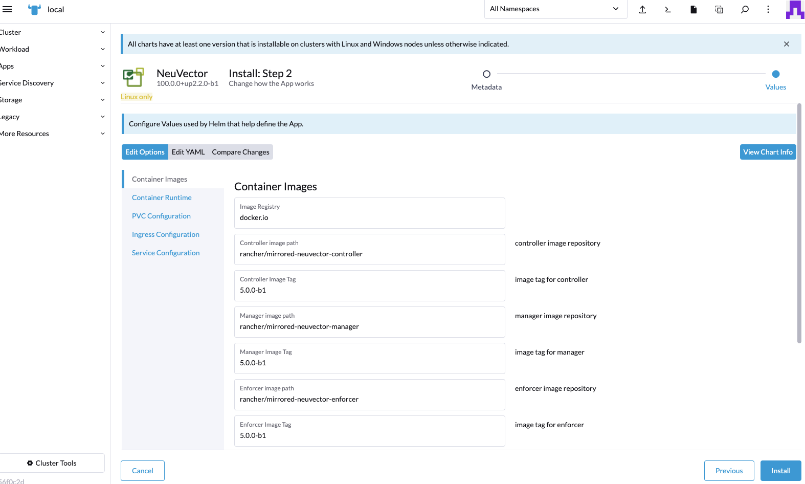

Rancher 部署
通过 Rancher 扩展或应用和市场部署和管理 SUSE® Security
SUSE® Security 可以通过 Rancher 扩展为 Prime 客户轻松部署，或通过 Rancher 应用和市场进行部署。默认的（基于 Helm 的）SUSE® Security 部署将会在 cattle-neuvector-system 名称空间中部署 SUSE® Security 个容器。
|
只有通过 Rancher 扩展（SUSE® Security）的 SUSE® Security 部署（适用于 Rancher 版本 2.7.0+），或通过 Rancher 应用和市场部署的 （适用于 Rancher 版本 2.6.5+），才能直接通过 Rancher 管理（单点登录到 SUSE® Security 控制台）。如果在 Rancher 中添加集群时 SUSE® Security 已经部署，或者 SUSE® Security 已直接部署到集群上，这些集群将无法启用 SSO 集成。 |
SUSE® Security Rancher 的 UI 扩展
Rancher Prime 客户可以轻松部署 SUSE® Security 和 Rancher 的 SUSE® Security UI 扩展。这将使 Prime 用户能够直接通过 Rancher UI 监控和管理某些 SUSE® Security 功能和事件。对于社区用户，请参见下面的部署 SUSE® Security 部分，从 Rancher 应用和市场进行部署。
-
第一步是全局启用 Rancher 扩展功能，如果尚未启用。


-
从可用列表中安装 SUSE® Security-UI-Ext

-
安装完成后重新加载扩展

-
在您选择的集群上，如果 SUSE® Security 应用尚未安装，请从 SUSE® Security 标签中安装 SUSE® Security 应用。这应该会带您到应用安装步骤。有关此安装过程的更多详细信息，请参见下面的部署 SUSE® Security 部分。

-
现在应该可以从该集群的 SUSE® Security 菜单中显示 SUSE® Security 仪表板。可以从此仪表板监控集群的安全健康摘要。仪表板中有交互元素，例如调用向导以改善您的（安全风险）评分，包括能够在未启用的情况下开启自动扫描漏洞。

此外，仪表板右上角的链接提供方便的单点登录（SSO）链接，以便访问完整的 SUSE® Security 控制台以进行更详细的分析和配置。
-
要卸载扩展，请返回扩展页面。

卸载 SUSE® Security UI 扩展不会从每个集群中卸载 SUSE® Security 应用。SUSE® Security 菜单将恢复为提供进入 SUSE® Security 控制台的 SSO 链接。
部署 SUSE® Security
首先，在 Rancher charts 中找到 SUSE® Security 图表，选择它并查看说明和各种配置值。（可选）如果需要，创建一个项目以进行部署，例如 SUSE® Security。注意：如果您看到多个 SUSE® Security 图表，请不要选择用于升级旧版 SUSE® Security 4.x Helm 图表部署的图表。

部署 SUSE® Security 图表，首先为 Rancher 部署配置适当的值，例如：
-
容器运行时，例如 RKE 的 docker 和 RKE2 的 containerd，或者如果使用 K3s，请选择 K3s 值。
-
管理服务类型：如果在公有云部署上可用，请更改为 LoadBalancer。如果只希望通过 Rancher 访问，这里任何允许的值都可以。请参见下面关于在 SUSE® Security 中更改默认管理员密码的重要说明。
-
指明此集群将是多集群联合主集群，还是远程（如果需要，可以选择两者）。
-
配置备份的持久卷

在您查看并更新任何图表值后，点击“安装”。
成功的 SUSE® Security 部署后，您将看到部署、守护程序集和 SUSE® Security 的定时任务摘要。您还可以在左侧的服务发现菜单中查看已部署的服务。

管理 SUSE® Security
现在您将在左侧看到一个 SUSE® Security 菜单项，点击后会显示一个 SUSE® Security 磁贴或按钮，再点击它将会在新标签页中打开 SUSE® Security 控制台。

当首次使用此单点登录（SSO）访问方法时，会在 SUSE® Security 集群中为 Rancher 用户登录创建一个相应的用户。与登录的 Rancher 用户相同的用户名将在 SUSE® Security 中创建，角色为 admin 或 fedAdmin，身份提供者为 Rancher。

在上面的屏幕截图中，两个 Rancher 用户 admin 和 gkosaka 已自动为 SSO 创建。如果在 SUSE® Security 中手动创建另一个用户，身份提供者将列为 SUSE® Security，如下所示。此本地用户可以直接登录到 SUSE® Security 控制台，而无需通过 Rancher。

|
建议直接以 admin/admin 登录到 SUSE® Security 控制台，以手动将管理员密码更改为强密码。这只会更改 SUSE® Security 身份提供者管理员用户的密码（您可能会看到另一个身份提供者为 Rancher 的管理员用户）。或者，在 Rancher 的初始部署中包含一个 ConfigMap 作为秘密（请参阅 ConfigMap 设置的图表值），以将默认管理员密码设置为强密码。 |
NeuVector/Rancher SSO 权限资源
Rancher v2.9.2 UI 提供在创建 Global/Cluster/Project/Namespaces 角色时选择 NeuVector 权限资源的功能。当 Rancher 用户被分配一个带有 NeuVector 权限资源的角色时，该用户的 NeuVector SSO 会话将相应地分配相应的 NeuVector 权限。这是为了为 SSO 用户提供除保留的 admin/reader/fedAdmin/fedReader 角色之外的自定义角色。
以下是与适用的 Global/Cluster/Project/Namespaces 角色一起使用的映射权限资源。
Global/Cluster 角色的映射权限资源
|
用户需要手动将 *（动词）/services/proxy（资源）添加到与 NeuVector 相关的 |
API组：
permission.neuvector.com
动词：
get // for read-only(i.e. view)
* // for read/write(i.e. modify)资源：
NeuVector，集群范围
AdmissionControl
Authentication
CI Scan
Cluster
Federation
VulnerabilityNeuVector，名称空间
AuditEvents
Authorization
Compliance
Events
Namespace
RegistryScan
RuntimePolicy
RuntimeScan
SecurityEvents
SystemConfig`Project/Namespace`角色的映射权限资源
|
用户需要手动将*（动词）/services/proxy（资源）添加到与 NeuVector 相关的`Project/Namespace`角色中。 |
API组：
permission.neuvector.com
动词：
get // for read-only(i.e. view)
* // for read/write(i.e. modify)资源：
NeuVector，名称空间
AuditEvents
Authorization
Compliance
Events
Namespace
RegistryScan
RuntimePolicy
RuntimeScan
SecurityEvents
SystemConfig
Rancher 遗留部署
示例文件将部署一个管理器和三个控制器。它将在每个节点上部署一个执行者。请参见底部部分以使用节点标签指定专用管理器或控制器节点。注意：不建议在负载均衡器后面部署（扩展）多个管理器，因为可能会出现会话状态问题。
|
在 Rancher 2.x/Kubernetes 上的部署应遵循 Kubernetes 参考部分和/或基于 Helm 的部署。 |
-
部署 catalog docker-compose-dist.yml，控制器将在标记的节点上部署，而执行者将在其余节点上部署。（示例文件可以修改，以便执行者仅部署到指定的节点。）
-
选择一个控制器供管理器连接。修改管理器的目录文件docker-compose-manager.yml，将CTRL_SERVER_IP设置为控制器的IP，然后部署管理器目录。
以下是示例的 Compose 文件。如果您只希望部署一个或两个组件，请仅使用文件的该部分。
Rancher 管理器/控制器/执行者 Compose 示例文件：
manager:
scale: 1
image: neuvector/manager
restart: always
environment:
- CTRL_SERVER_IP=controller
ports:
- 8443:8443
controller:
scale: 3
image: neuvector/controller
restart: always
privileged: true
environment:
- CLUSTER_JOIN_ADDR=controller
volumes:
- /var/run/docker.sock:/var/run/docker.sock
- /proc:/host/proc:ro
- /sys/fs/cgroup:/host/cgroup:ro
- /var/neuvector:/var/neuvector
enforcer:
image: neuvector/enforcer
pid: host
restart: always
privileged: true
environment:
- CLUSTER_JOIN_ADDR=controller
volumes:
- /lib/modules:/lib/modules
- /var/run/docker.sock:/var/run/docker.sock
- /proc:/host/proc:ro
- /sys/fs/cgroup/:/host/cgroup/:ro
labels:
io.rancher.scheduler.global: true在不使用特权模式下部署
在某些系统上，支持不使用特权模式进行部署。这些系统必须支持使用 cap_add 设置添加能力，并设置 apparmor 配置文件。
请参阅有关使用 Docker-Compose、Docker UCP/数据中心进行部署的部分，以获取示例 Compose 文件。
这是一个不使用特权模式进行部署的 Rancher Compose 示例文件：
manager:
scale: 1
image: neuvector/manager
restart: always
environment:
- CTRL_SERVER_IP=controller
ports:
- 8443:8443
controller:
scale: 3
image: neuvector/controller
pid: host
restart: always
cap_add:
- SYS_ADMIN
- NET_ADMIN
- SYS_PTRACE
security_opt:
- apparmor=unconfined
- seccomp=unconfined
- label=disable
environment:
- CLUSTER_JOIN_ADDR=controller
volumes:
- /var/run/docker.sock:/var/run/docker.sock
- /proc:/host/proc:ro
- /sys/fs/cgroup:/host/cgroup:ro
- /var/neuvector:/var/neuvector
enforcer:
image: neuvector/enforcer
pid: host
restart: always
cap_add:
- SYS_ADMIN
- NET_ADMIN
- SYS_PTRACE
- IPC_LOCK
security_opt:
- apparmor=unconfined
- seccomp=unconfined
- label=disable
environment:
- CLUSTER_JOIN_ADDR=controller
volumes:
- /lib/modules:/lib/modules
- /var/run/docker.sock:/var/run/docker.sock
- /proc:/host/proc:ro
- /sys/fs/cgroup/:/host/cgroup/:ro
labels:
io.rancher.scheduler.global: true为管理器和控制器节点使用节点标签
要控制管理器和控制器部署在哪些节点上，请为每个节点打标签。选择要部署控制器的节点。将它们标记为 "nvcontroller=true"。（在当前示例文件中，同一节点上不能运行超过一个控制器。）
对于管理器节点，将其标记为 “nvmanager=true”。
在 yaml 文件中添加标签。例如，对于管理器：
labels:
io.rancher.scheduler.global: true
io.rancher.scheduler.affinity:host_label: "nvmanager=true"对于控制器：
labels:
io.rancher.scheduler.global: true
io.rancher.scheduler.affinity:host_label: "nvcontroller=true"对于执行者，为防止其在控制器节点上运行（如有需要）：
labels:
io.rancher.scheduler.global: true
io.rancher.scheduler.affinity:host_label_ne: "nvcontroller=true"